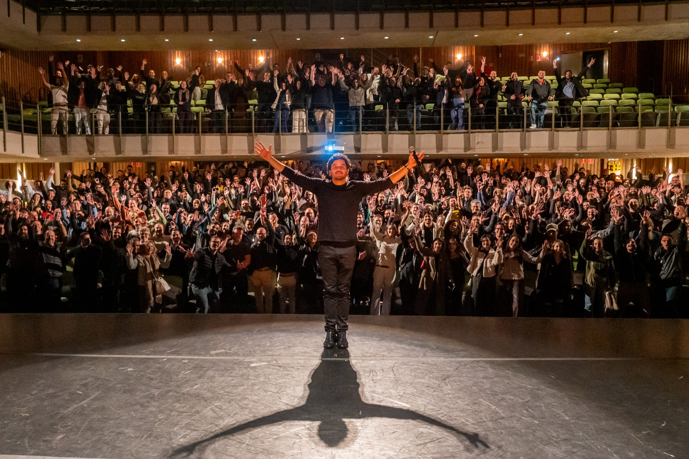
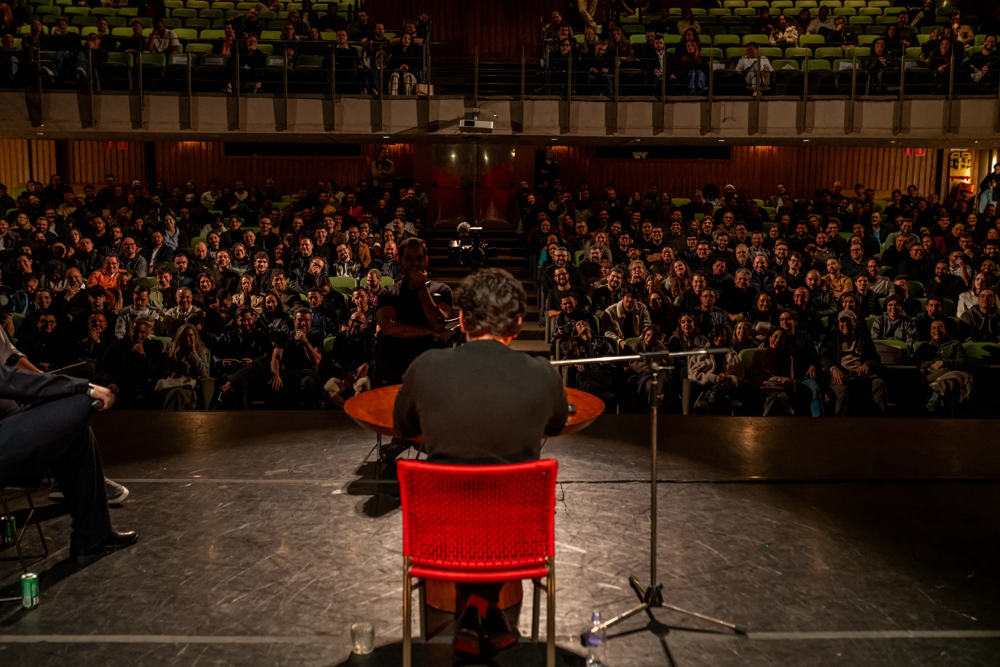

Mais do que um treinamento, somos uma comunidade.
Nascemos da educação financeira e hoje acompanhamos você em cada momento da sua relação com o dinheiro.

O produto
O que é a AUVP Escola?
A formação completa para você sair do zero e chegar à autonomia, com material, ferramentas e gente para tirar dúvida do lado.
Assim são nossas aulas por dentro
Cronograma de conteúdo
* Expanda os módulos da grade para consultar a lista de aulas.
!Observação: A quantidade de aulas e módulos sofrerá ajustes regulares, pois a AUVP produz e disponibiliza continuamente novos conteúdos aos membros, como forma de preservar a qualidade e manter a evolução constante dos produtos.
Módulos avançados para ir além
Depois da grade principal, o caminho é seu: se quiser aprofundar algum tema, os módulos extras estão à sua disposição.
Ferramentas exclusivas para facilitar sua vida
Onde o seu dinheiro pode chegar
Pensou em dinheiro, pensou na AUVP.
Um ecossistema.
Duas frentes, uma marca só.
A estrutura do ecossistema.
O que mudou na AUVP em 2026?
A Escola se atualiza mês a mês com conteúdos novos, ferramentas novas e melhorias pedidas pela comunidade. Estas são as entregas mais recentes.

Bem-vindo à AUVP